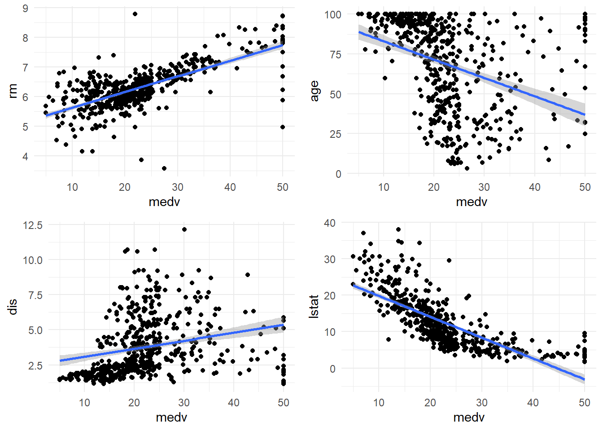
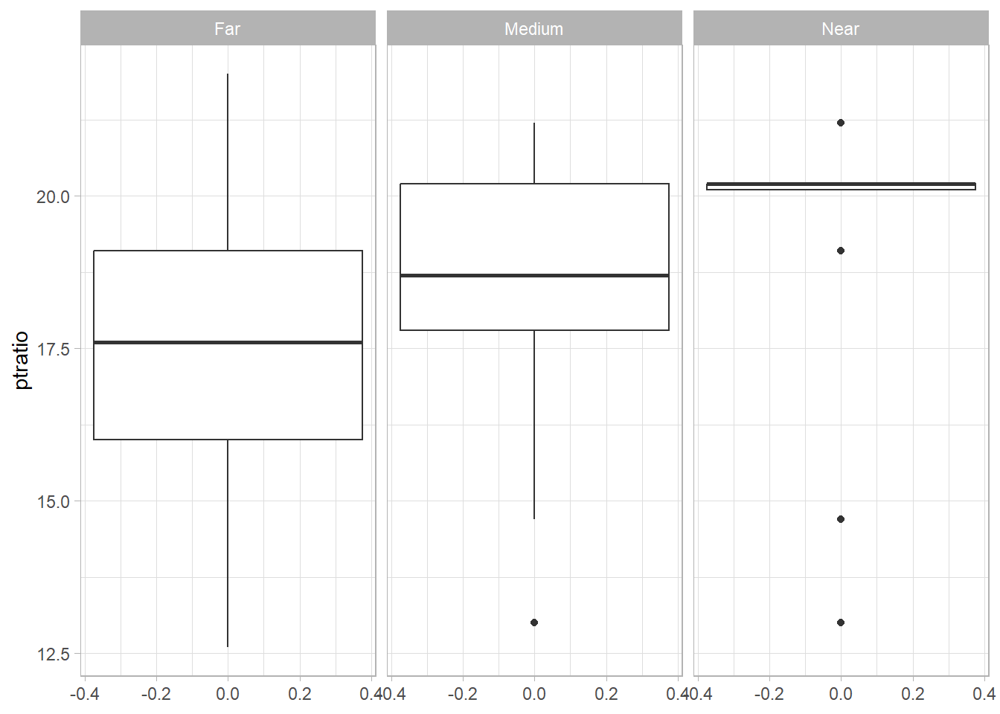

3 Exploratory Data Analysis - II
This week we will try to apply our last weeks knowledge into analysis.
3.1 Markdown Introduction
R Markdown is a powerful tool that allows you to create dynamic documents, presentations, and reports using R code. It combines the core syntax of markdown (an easy-to-write plain text format) with embedded R code chunks that are run when the document is rendered¹.
R Markdown documents are fully reproducible, meaning that anyone can re-run the code and generate the same results. This makes it easy to share your work with others and ensure that your results are accurate and reliable.
One of the great things about R Markdown is its flexibility. You can use it to create a wide variety of output formats, including HTML, PDF, and Microsoft Word documents. You can even create interactive documents with Shiny components¹.
To get started with R Markdown, you’ll need to install the rmarkdown package from CRAN. This can be done by running the command install.packages("rmarkdown") in the R console². Once you have the package installed, you can create a new R Markdown document in RStudio by going to File > New File > R Markdown.
An R Markdown document is made up of text written in markdown syntax and chunks of R code. When you render the document, the R code is executed and its output (such as plots or tables) is inserted into the final document¹.
When you render this document, the text and code will be combined to create an HTML file that includes both the markdown text and the output of the R code chunks.
You can easily add images to an R Markdown document using the standard markdown syntax for images. The basic syntax for adding an image is , where Alt text is the text that will be displayed if the image cannot be loaded, and image_url is the URL of the image you want to include.
I hope this helps you understand how to add images to an R Markdown document! Let me know if you have any further questions 😊
R Markdown is a powerful tool that offers many advantages for data analysis and reporting. Some of the key benefits of using R Markdown include:
Reproducibility: R Markdown documents are fully reproducible, meaning that anyone can re-run the code and generate the same results. This makes it easy to share your work with others and ensure that your results are accurate and reliable.
Flexibility: R Markdown is incredibly flexible and can be used to create a wide variety of output formats, including HTML, PDF, and Microsoft Word documents. You can even create interactive documents with Shiny components.
Ease of use: R Markdown is easy to use, even for people with little or no programming experience. The core syntax of markdown is simple and intuitive, and the ability to embed R code directly into the document makes it easy to include dynamic content.
Integration with R: R Markdown is tightly integrated with R, making it easy to access and use the full power of the R language for data analysis and visualization.
Collaboration: R Markdown makes it easy to collaborate with others on data analysis projects. You can share your code and results with others, and they can easily reproduce your work and build on it.
Overall, R Markdown is a powerful tool that offers many advantages for data analysis and reporting. It’s a great way to create dynamic, reproducible documents that are easy to share and collaborate on 😊
I hope this introduction helps you understand what R Markdown is and how it can be used. If you want to learn more, there are many great resources available online, including the R Markdown website 😊
3.2 Applying EDA(WVS/own data)
3.2.1 Exercise - 1
Boston Housing Dataset
Housing data contains 506 census tracts of Boston from the 1970 census. The dataframe BostonHousing contains the original data by Harrison and Rubinfeld (1979), the dataframe BostonHousing2 the corrected version with additional spatial information.
The dataset has two prototasks: nox, in which the nitrous oxide level is to be predicted; and price, in which the median value of a home is to be predicted.
Other Details: Origin -The origin of the boston housing data is Natural. Usage -This dataset may be used for Assessment. Number of Cases -The dataset contains a total of 506 cases. Order -The order of the cases is mysterious. Variables -There are 14 attributes in each case of the dataset. They are: 1. CRIM - per capita crime rate by town 2. ZN - proportion of residential land zoned for lots over 25,000 sq.ft. 3. INDUS - proportion of non-retail business acres per town. 4. CHAS - Charles River dummy variable (1 if tract bounds river; 0 otherwise) 5. NOX - nitric oxides concentration (parts per 10 million) 6. RM - average number of rooms per dwelling 7. AGE - proportion of owner-occupied units built prior to 1940 8. DIS - weighted distances to five Boston employment centres 9. RAD - index of accessibility to radial highways 10. TAX - full-value property-tax rate per $10,000 11. PTRATIO - pupil-teacher ratio by town 12. B - 1000(Bk - 0.63)^2 where Bk is the proportion of blacks by town 13. LSTAT - % lower status of the population 14. MEDV - Median value of owner-occupied homes in $1000’s
You can include this data by installing mlbench library:
#install.packages("mlbench") ## installing the library
library(mlbench) #adding the library
library(openxlsx)
library(dplyr)
data(BostonHousing2)
housing <- BostonHousing2
write.xlsx(housing, "../datasets/boston.xlsx")- Read the dataset: Read the Boston Housing Dataset from the Excel file.
- Inspect the dataset: Use the proper functions to inspect the structure and contents of the dataset. How many Categorical variables are there? How many numerical variables are there? Is there any null values?
## tibble [506 × 19] (S3: tbl_df/tbl/data.frame)
## $ town : chr [1:506] "Nahant" "Swampscott" "Swampscott" "Marblehead" ...
## $ tract : num [1:506] 2011 2021 2022 2031 2032 ...
## $ lon : num [1:506] -71 -71 -70.9 -70.9 -70.9 ...
## $ lat : num [1:506] 42.3 42.3 42.3 42.3 42.3 ...
## $ medv : num [1:506] 24 21.6 34.7 33.4 36.2 28.7 22.9 27.1 16.5 18.9 ...
## $ cmedv : num [1:506] 24 21.6 34.7 33.4 36.2 28.7 22.9 22.1 16.5 18.9 ...
## $ crim : num [1:506] 0.00632 0.02731 0.02729 0.03237 0.06905 ...
## $ zn : num [1:506] 18 0 0 0 0 0 12.5 12.5 12.5 12.5 ...
## $ indus : num [1:506] 2.31 7.07 7.07 2.18 2.18 2.18 7.87 7.87 7.87 7.87 ...
## $ chas : chr [1:506] "0" "0" "0" "0" ...
## $ nox : num [1:506] 0.538 0.469 0.469 0.458 0.458 0.458 0.524 0.524 0.524 0.524 ...
## $ rm : num [1:506] 6.58 6.42 7.18 7 7.15 ...
## $ age : num [1:506] 65.2 78.9 61.1 45.8 54.2 58.7 66.6 96.1 100 85.9 ...
## $ dis : num [1:506] 4.09 4.97 4.97 6.06 6.06 ...
## $ rad : num [1:506] 1 2 2 3 3 3 5 5 5 5 ...
## $ tax : num [1:506] 296 242 242 222 222 222 311 311 311 311 ...
## $ ptratio: num [1:506] 15.3 17.8 17.8 18.7 18.7 18.7 15.2 15.2 15.2 15.2 ...
## $ b : num [1:506] 397 397 393 395 397 ...
## $ lstat : num [1:506] 4.98 9.14 4.03 2.94 5.33 ...## Rows: 506
## Columns: 19
## $ town <chr> "Nahant", "Swampscott", "Swampscott", "Marblehead", "Marblehea…
## $ tract <dbl> 2011, 2021, 2022, 2031, 2032, 2033, 2041, 2042, 2043, 2044, 20…
## $ lon <dbl> -70.9550, -70.9500, -70.9360, -70.9280, -70.9220, -70.9165, -7…
## $ lat <dbl> 42.2550, 42.2875, 42.2830, 42.2930, 42.2980, 42.3040, 42.2970,…
## $ medv <dbl> 24.0, 21.6, 34.7, 33.4, 36.2, 28.7, 22.9, 27.1, 16.5, 18.9, 15…
## $ cmedv <dbl> 24.0, 21.6, 34.7, 33.4, 36.2, 28.7, 22.9, 22.1, 16.5, 18.9, 15…
## $ crim <dbl> 0.00632, 0.02731, 0.02729, 0.03237, 0.06905, 0.02985, 0.08829,…
## $ zn <dbl> 18.0, 0.0, 0.0, 0.0, 0.0, 0.0, 12.5, 12.5, 12.5, 12.5, 12.5, 1…
## $ indus <dbl> 2.31, 7.07, 7.07, 2.18, 2.18, 2.18, 7.87, 7.87, 7.87, 7.87, 7.…
## $ chas <chr> "0", "0", "0", "0", "0", "0", "0", "0", "0", "0", "0", "0", "0…
## $ nox <dbl> 0.538, 0.469, 0.469, 0.458, 0.458, 0.458, 0.524, 0.524, 0.524,…
## $ rm <dbl> 6.575, 6.421, 7.185, 6.998, 7.147, 6.430, 6.012, 6.172, 5.631,…
## $ age <dbl> 65.2, 78.9, 61.1, 45.8, 54.2, 58.7, 66.6, 96.1, 100.0, 85.9, 9…
## $ dis <dbl> 4.0900, 4.9671, 4.9671, 6.0622, 6.0622, 6.0622, 5.5605, 5.9505…
## $ rad <dbl> 1, 2, 2, 3, 3, 3, 5, 5, 5, 5, 5, 5, 5, 4, 4, 4, 4, 4, 4, 4, 4,…
## $ tax <dbl> 296, 242, 242, 222, 222, 222, 311, 311, 311, 311, 311, 311, 31…
## $ ptratio <dbl> 15.3, 17.8, 17.8, 18.7, 18.7, 18.7, 15.2, 15.2, 15.2, 15.2, 15…
## $ b <dbl> 396.90, 396.90, 392.83, 394.63, 396.90, 394.12, 395.60, 396.90…
## $ lstat <dbl> 4.98, 9.14, 4.03, 2.94, 5.33, 5.21, 12.43, 19.15, 29.93, 17.10…## town tract lon lat medv cmedv crim zn indus chas
## 0 0 0 0 0 0 0 0 0 0
## nox rm age dis rad tax ptratio b lstat
## 0 0 0 0 0 0 0 0 0- Summarize categorical variables: Create frequency table for categorical variables CHAS (Charles River dummy variable).
##
## 0 1
## 471 35- Summarize numerical variables: Generate summary statistics for numerical variables CRIM (per capita crime rate by town) and RM (average number of rooms per dwelling).
## Min. 1st Qu. Median Mean 3rd Qu. Max.
## 0.00632 0.08204 0.25651 3.61352 3.67708 88.97620## Min. 1st Qu. Median Mean 3rd Qu. Max.
## 3.561 5.886 6.208 6.285 6.623 8.780- Create new variables: Create new variable indicating whether a house is located near the Charles River or not.
library(dplyr)
BostonHousing <- BostonHousing %>%
mutate(near_river = case_when(chas == 1 ~ "Yes",
chas != 1 ~ "No"))- Recoding variables: Create a new variable that groups houses by their proximity to employment centers.
BostonHousing <- BostonHousing %>%
mutate(distance_group = case_when(
dis < 2 ~ "Near",
dis >= 2 & dis < 5 ~ "Medium",
dis >= 5 ~ "Far"
))- Visualize relationships: Create scatter plots to explore the relationship between housing prices and other numeric variables(
rm,age,dis,lstat). Interpret the plots. Also show the distribution of ptratio by distance_group.
# Create a list of numeric variables to plot against MEDV
vars <- c("rm", "age", "dis", "lstat")
# Create a scatter plot for each variable
#rm
rm_sp <- BostonHousing %>%
ggplot(aes(y=rm, x=medv)) +
geom_point() +
stat_smooth(method = "lm") +
theme_minimal()
#age
age_sp <- BostonHousing %>%
ggplot(aes(y=age, x=medv)) +
geom_point() +
stat_smooth(method = "lm") +
theme_minimal()
#dis
dis_sp <- BostonHousing %>%
ggplot(aes(y=dis, x=medv)) +
geom_point() +
stat_smooth(method = "lm") +
theme_minimal()
#lstat
lstat_sp <- BostonHousing %>%
ggplot(aes(y=lstat, x=medv)) +
geom_point() +
stat_smooth(method = "lm") +
theme_minimal()
#adding all plots in one
library("ggpubr")
ggarrange(rm_sp, age_sp,
dis_sp, lstat_sp,
ncol = 2, nrow = 2)
boxplot
# Create a boxplot of PTRATIO grouped by distance_group
BostonHousing %>% ggplot() +
geom_boxplot(aes(y=ptratio)) +
facet_wrap(~distance_group) +
theme_light()
- Correlation analysis: Calculate correlation coefficients between housing prices and average number of rooms per dwelling, also between housing prices and crime rate. Interpret the result.
library(corrplot)
corr_matrix0 <- cor(BostonHousing[, c("medv", "rm")])
corr_matrix1 <- cor(BostonHousing[, c("medv", "crim")])
corrplot(corr_matrix0)